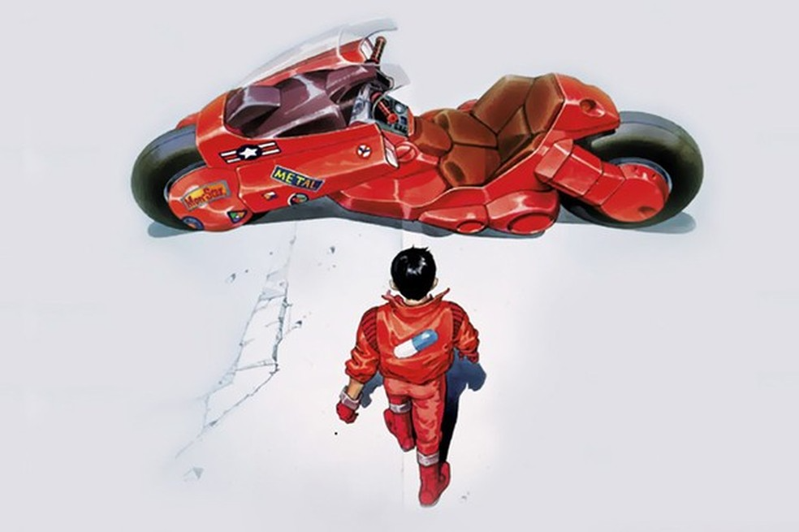

Akira - 1988
SINOPSE
Não recomendado para menores de 14 anos
Uma grande explosão fez com que Tóquio fosse destruída em 1988. Em seu lugar foi construída Neo Tóquio, que, em 2019, sofre com atentados terroristas por toda a cidade. Kaneda (Mitsuo Iwata) e Tetsuo (Nozomu Sasaki) são amigos que integram uma gangue de motoqueiros. Eles disputam rachas violentos com uma gangue rival, os Palhaços, até que um dia Tetsuo encontra Takashi (Tatsuhiko Nakamura), uma estranha criança com poderes que fugiu do hospital onde era mantido como cobaia. Tetsuo é ferido no encontro e antes de receber a ajuda dos amigos é levado por integrantes do exército, liderados pelo coronel Shikishima (Tarô Ishida). A partir de então Tetsuo passa a desenvolver poderes inimagináveis, o que faz com que seja comparado ao lendário Akira, responsável pela explosão de 1988. Paralelamente, Kaneda se interessa por Kei (Mami Koyama), uma garota envolvida com espiões que tenta decifrar o enigma por trás das cobaias controladas pelo exército.